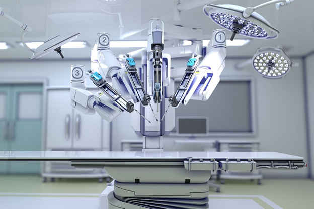
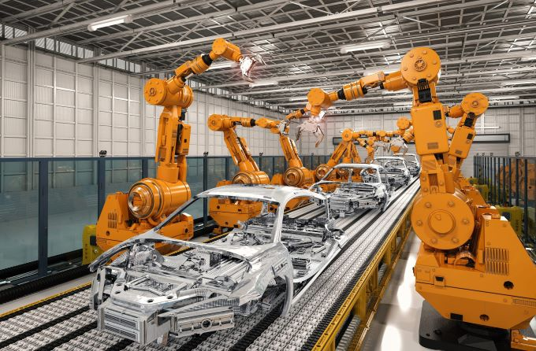

В настоящее время особенно активно развивается роботизированная хирургия. Медицинские роботы берут на себя многие функции, которые раньше выполнялись врачами-хирургами.

Благодаря кибернетическим технологиям современный человек может вернуть утраченную часть тела. Огромный прорыв в медицине произошел с тех пор как появились бионические протезы, которыми люди управляют при помощи собственной нервной системы.
Космороботы активно используются человеком в освоении просторов Вселенной. Роботизированные механизмы собирают образцы почвы и исследуют новые пространства в условиях, которые опасны для жизни человека: при повышенной радиации, экстремальных температурах и т.д.
Роботизированные устройства со специальными датчиками позволяют оперативно обнаруживать пожароопасные ситуации и успешно предотвращать их.
В условиях высокой конкуренции на промышленном рынке предприятия стараются сделать свои производственные процессы максимально эффективными. И помогают им в этом современные роботизированные технологии.
Автоматизированные промышленные роботы применяются для сварки, укладки, покраски и прочих операций, требующих многократного повторения и высокой точности.
Использование промышленных роботов значительно увеличивает производительность предприятий, в то время как человеческие ресурсы освобождаются для выполнений более важных задач.
Роботы гораздо ближе к людям, чем кажется. Многие из них достаточно давно и успешно используются в быту.
Все большей популярностью в последнее время пользуются «умные дома», в которые внедрена автоматизированная сеть, контролирующая электричество, водоснабжение, безопасность и другие системы.
Применение роботов в различных направлениях деятельности привело к их внедрению в сферу досуга. Сегодня на прилавках магазинов немало радиоуправляемых и интерактивных детских игрушек, которые умеют петь, танцевать, рассказывать сказки и даже летать.
Вершина современных разработок – роботы гуманоидного типа, реалистичные андроиды, умеющие поддерживать беседу, анализировать информацию и даже шутить.
Для обслуживания клиентов в современных организациях используются промороботы. Они общаются с людьми, распознают лица и речь, делают фото, самостоятельно передвигаются, избегая препятствий.
Сегодня роботы заменяют или дополняют «живых» сотрудников.